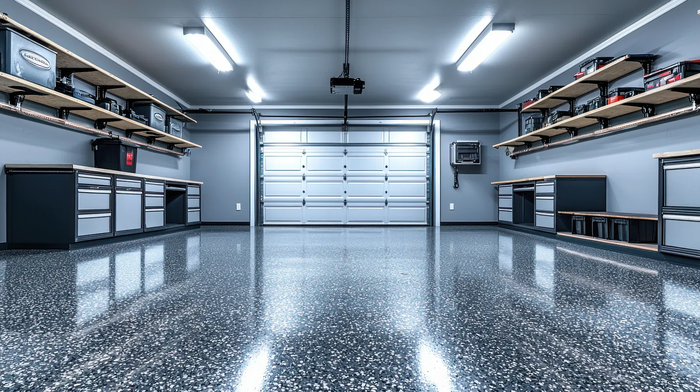
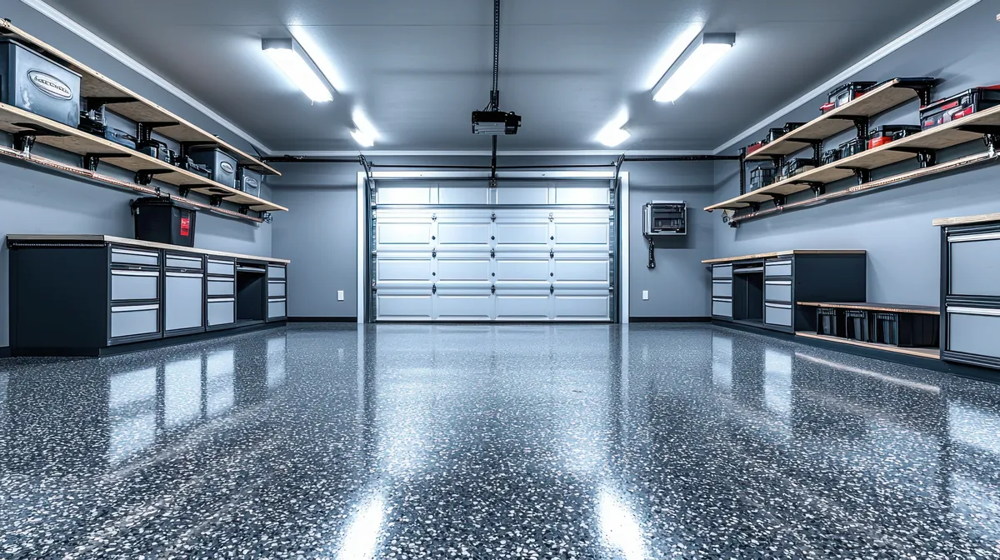
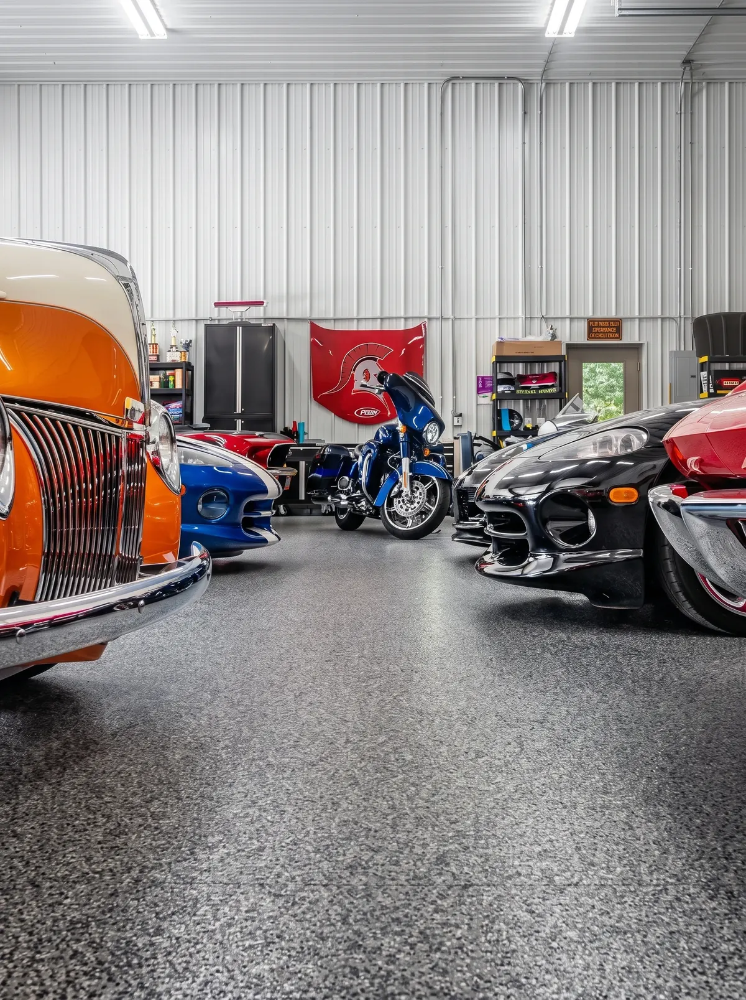

Flooring
Worn, stained, or unfinished concrete can be updated with a surface better suited for daily garage use.

Space Up Construction · Massachusetts
Space Up updates floors, walls, and finishes in residential garages that feel unfinished, worn, or no longer work well for everyday use.
The Garage Gets Used Every Day
Worn flooring, unfinished walls, visible patchwork, old paint, and wasted space can make the garage feel disconnected from the rest of the house, and that is usually where the remodel starts.
Talk About My Garage ↗Garage Remodeling

Worn, stained, or unfinished concrete can be updated with a surface better suited for daily garage use.
Repair and finish damaged, incomplete, or patched walls so old repairs and unfinished areas stop standing out.
Update walls, ceilings, trim, and other surfaces so the garage has a more consistent finish.
Take care of the details that make the difference between a garage that looks patched together and one that looks complete.
Review how the garage is being used and where usable space is being lost.
The Space Is Already There
Tools, boxes, bikes, and everyday items can slowly take over the garage, making circulation harder and leaving usable areas underused. A remodel helps reorganize the space around how you use it today, while updating the surfaces and finishes that need attention.

Finishing
The same happens when paint, repairs, and finish details do not work together. Space Up looks at the garage as one space, addressing the areas that need repair or finishing so the final result does not feel like a collection of separate fixes.
Common Reasons to Start
Homeowners often contact Space Up because:
The scope depends on the current condition of the garage and what needs to work better after the remodel.
Talk to Space Up ↗Projects


How to Get Started
Tell us where the property is located.
Flooring, walls, unfinished areas, old finishes, or parts of the garage that are difficult to use.
The work is based on the current condition of the garage and what needs to be updated.
Once the scope is clear, the next steps can be scheduled.
Yes. Space Up works on residential garage remodeling and finishing projects in Massachusetts.
Yes. Tell us which areas were left unfinished or need to be updated so the team can understand the scope.
Yes. Flooring can be included based on the condition of the existing surface and the work defined for the project.
Yes. Space Up can include drywall repair and wall finishing as part of a garage remodeling project.
Yes. How the garage is currently used can be considered when deciding which areas need to change.
No. Tell us what bothers you about the garage today and how you use the space. The scope can be discussed from there.
Space Up Construction
Show Space Up what needs to be updated, repaired, or finished, and tell us what you want the space to do better.